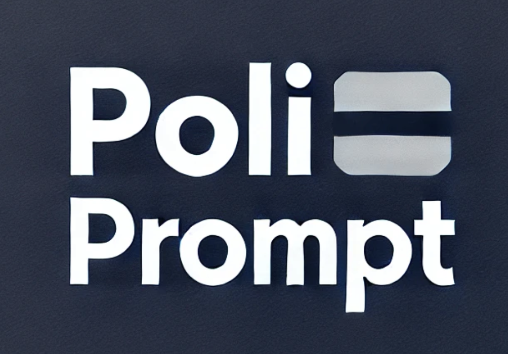

PoliPrompt Package
Here you can find the code and a Python software package I have developed to support my research:
-
PoliPrompt: A high-performance LLM-based text classification framework designed for political science research.
[Package Link] |
[GitHub Repository]
-
PoliPrompt Tutorial: A guide for using PoliPrompt, currently under development.
[Tutorial Link]
Feel free to explore these resources and contact me at mliliu@ucdavis.edu if you have any questions or need further information.
Back to Home